11 Exploring Data
11.1 Introduction
This document is part of our “First Steps in R” resources. It is assumed that the reader understands the idea of an object, a function and a package in R. If you would like to recap these topics, the documents and videos are on the MASH website.
11.2 Built-in Datasets
When R and RStudio are first installed, several useful packages are installed by default. Two packages in particular contain datasets which are often used for exercises while learning R. The “datasets” package containing \(104\) datasets is one that is already loaded. This means that all of its datasets are available immediately. To view information on the datasets package type the following into the R console:
library(help=“datasets”)
This will give you brief details of the datasets including the name of each and a short description.
The command
data()
will produce a list of the datasets in the datasets package.
A second useful package, “MASS”, contains \(87\) datasets. It is not loaded by default so to access its datasets we must first load the package using the command
library(MASS)
11.3 Viewing a Dataset
“mtcars” is a dataset contained in the datasets package. We will use this dataset as an example for the rest of this document. Like other datasets in the above packages, it is stored as a data frame in R. Therefore we can view the data by simply typing
mtcars
into the console.
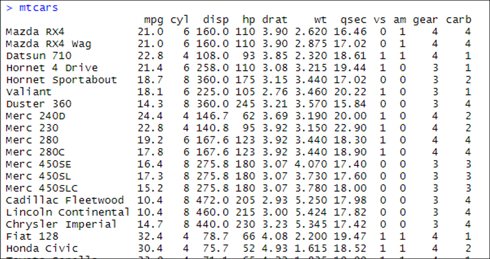
mtcars data frame is shown in the console in RStudio.
We can find the details of what data is collected and how it is recorded using
?mtcars
The “Help” window then shows us the following:
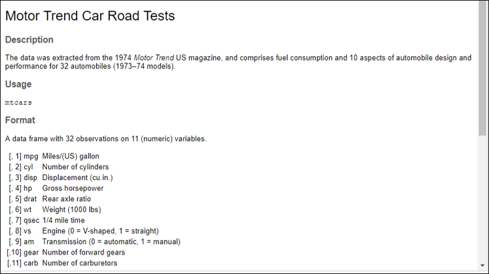
?mtcars is typed into the console.
If we want to access one variable from a dataset, we can use “$”. For example,
mtcars$cyl
tells R to look at the mtcars data frame and then find the variable labelled “cyl”.
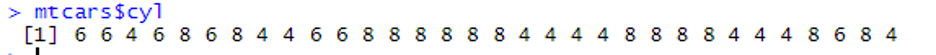
cyl column of the mtcars data frame is shown in the console in RStudio.
11.4 Attaching the Dataset
If we are going to work with a dataset a lot we can use the “attach” command like so
attach(mtcars)
Once a dataset is attached, the variables can be accessed without needing to use the mtcars$ prefix:
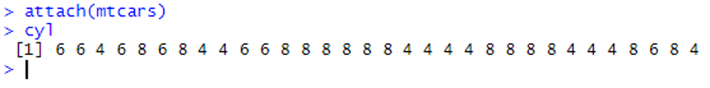
mtcars dataset, the data in the cyl column of the mtcars data frame is shown in the console in RStudio.
Once you have finished working with the dataset, it is good practice to “detach” like so:
detach(mtcars)
11.5 Functions For Getting to Know a Dataset
We can display a full dataset by simply typing the name of the data frame in which it is stored. However, a dataset may be too large to get a feel for the data this way. The following functions are useful for getting to know a dataset:
names()
gives a list of all the column names in the data frame.
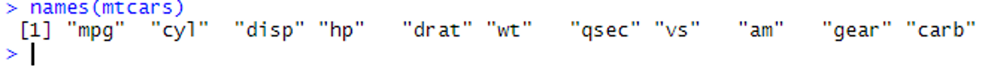
mtcars data frame is shown in the console in RStudio.
dim()
gives the number of rows and columns (in that order).
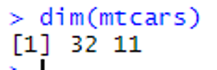
mtcars data frame is outputted in the console in RStudio.
In this example you can see that there are \(32\) rows and \(11\) variables in the data frame.
nrow() and ncol() can also be used for just the numbers of rows and/or columns.
head()
gives the first few rows of the data frame.
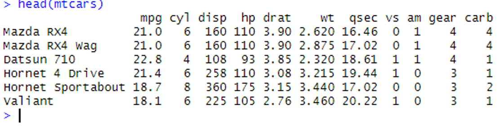
mtcars data frame are outputted in the console in RStudio.
tail() is similar to head() but gives the last few rows.
str()
stands for “structure”. This gives the number of observations and variables (rows and columns) followed by the name, data type of each column (numerical vector, character vector, logical vector or factor) and the first few entries in each variable:
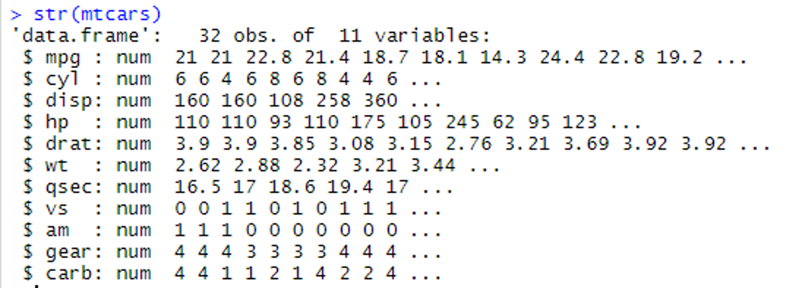
mtcars data frame is detailed in the console in RStudio.
“num” is short for numerical. All the variables in this particular data frame happen to be numerical vectors.
summary()
gives a summary of each variable in the dataset.
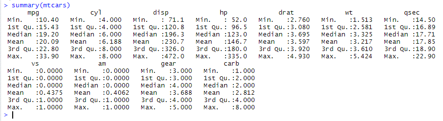
mtcars dataset is outputted in the console in RStudio.
A column which stores a numeric vector gets summarised as above. A column which is stored in R as a factor is summarised with how many times each level appears in the column. To see this try investigating the dataset “esoph” which is part of the dataset package. Hint: type ?esoph to see what data are stored in the dataset then str(esoph) to see which columns are numeric vectors and which are factors. Finally type summary(esoph) to see what the summary of a factor looks like.
11.6 Exercise
- Use the
data()command in the console to view a list of available datasets.
Choose a dataset from the list and find out the following information:
- What data are stored in the dataset
- How many sampling units and how many variables there are
- What type of variables the dataset contains (numeric, factor etc)
- The maximum and minimum values of any numeric variables
11.6.1 Solutions
Solutions
- Initially I chose “InsectSprays”.
- I typed
?InsectSpraysand the following information was displayed in the “Help” window (bottom right):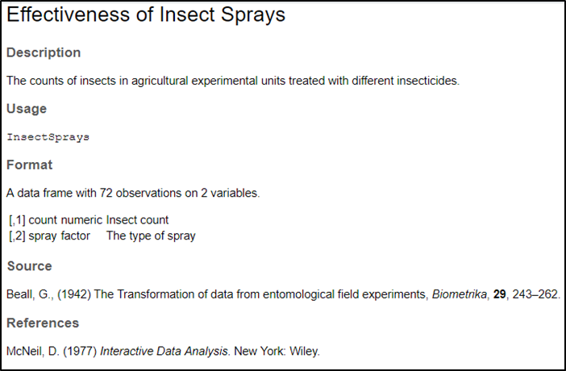
Figure 10: The “Help” tab of the bottom right window in RStudio when ?InsectSpraysis typed into the console. - There are two variables in the dataset and \(72\) observations/sampling units.
- The first variable is numeric and contains the insect count. The second variable is a factor that codes for the type of insect spray that was used. At this point there is no information on the number of levels of the factor, but the usefulness of using the command
?InsectSpraysis that the “Help” window gives you additional information such as the source of the dataset and a description of it.
I then typed str(InsectSprays) to obtain the following info in the console window, which includes information on the number of level of the factor variable.
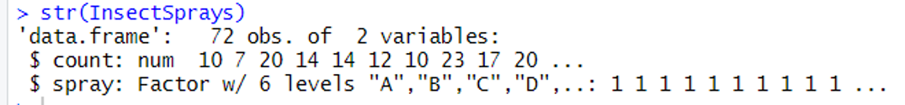
InsectSprays data frame is detailed in the console in RStudio.
- There is only one numeric variable in this dataset so could type
summary(InsectSprays$count)to get only the info for this variable:
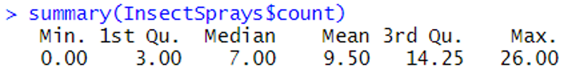
InsectSprays dataset are outputted in the console in RStudio.
Alternatively, could simply type summary(InsectSprays) and get the information for all variables:
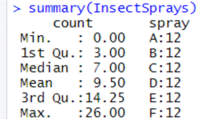
InsectSprays dataset are outputted in the console in RStudio.